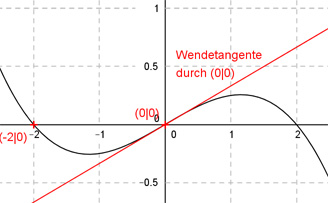

Aufgabe 36 Wie lautet die Funktionsgleichung des Graphen einer ganzrationalen Funktion 3. Grades, der die x-Achse an der Stelle x = -2 schneidet, bei (0|0) einen Wendepunkt hat und deren Wendetangente die Gleichung f(x) = (1/3)x hat?  Allgemeine Form einer ganzrationalen Funktion 3. Grades: f(x) = ax3 + bx2 + cx + d f’(x) = 3ax2 + 2bx + c f’’(x) = 6ax + 2b 4 Bedingungen: 1. Schneidet die x-Achse an der Stelle x = -2 bedeutet: f(-2) = 0 --> a * (-2)3 + b * (-2)2 + c * (-2) + d = 0 --> -8a + 4b - 2c + d = 0 I 2. Hat einen Wendepunkt bei (0|0) bedeutet zum einen: f(0) = 0 --> a * 03 + b * 02 + c * 0 + d = 0 --> d = 0 3. Hat einen Wendepunkt bei (0|0) bedeutet zum anderen: f’’(0) = 0 --> 6a * 0 + 2b = 0 --> 2b = 0 |:2 --> b = 0 4. Die Wendetangente hat die Gleichung f(x) = (1/3)x bedeutet: (b = 0 eingesetzt): f’(0) = 1/3 --> 3a * 02 + c = 1/3 --> c = 1/3 c = 1/3 und b = 0 und d = 0 in I eingesetzt: -8a - 2 * 1/3 = 0 -8a - 2/3 = 0 +2/3 -8a = 2/3 |:(-8) 2 1 a = - ---- = - ---- 24 12 Gesuchte Funktionsgleichung: f(x) = -(1/12)x3 (1/3)x